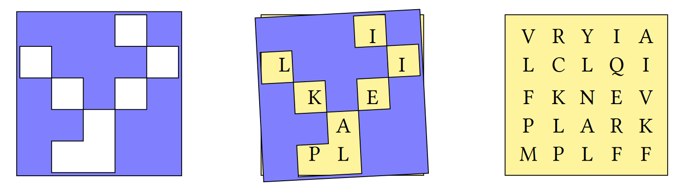

Array Logic and Data-driven Conditionals
Logic and conditions
APL has logical and comparison functions as in-built primitives. Much like the arithmetic, these symbols are like those used in conventional notation.
Some of these are more general mathematical functions which happen to be the same as logical functions when used with Booleans (1s and 0s):
3 ∧ 4 ⍝ Lowest common multiple12 0 1 0 1 ∧ 0 0 1 1 ⍝ Logical AND0 0 0 1 12 ∨ 16 ⍝ Greatest common divisor4 0 1 0 1 ∨ 0 0 1 1 ⍝ Logical OR0 1 1 1 'P' ≠ 'Q' ⍝ Not equal to1 0 1 0 1 ≠ 0 0 1 1 ⍝ Logical XOR 0 1 1 0Info
The 16 possible logic functions for two binary variables can all be expressed succinctly in APL, as shown in the notebook and webinar on Boolean scans and reductions.
The shape of data
One of the distinguishing features of APL is the multidimensional array. Single elements, lists and tables are quite familiar constructs.
Tables are very useful for representing data which is related in some way. For example, let's say that the price of oranges changes daily. We can represent a week of prices as a 7-element numeric list.
0.35 0.3 0.33 0.32 0.39 0.33 0.36How about the amount spent on 3 items? We could store this in 3 separate lists, but it is convenient to keep it in a table with 3 rows and 7 columns.
The reshape function ⍺⍴⍵ takes data from ⍵ and uses it to fill out an array of shape ⍺, one row at a time.
cost ← 3 7⍴4.36 4.22 4.05 4.14 4.18 4.19 4.02 2.79 2.58 2.68 2.77 2.88 2.79 2.52 3.07 3 3.13 3 3.24 3.06 3.29
cost4.36 4.22 4.05 4.14 4.18 4.19 4.02
2.79 2.58 2.68 2.77 2.88 2.79 2.52
3.07 3 3.13 3 3.24 3.06 3.29So what is this table that we have created? In other languages, there are lists, and there are lists of lists. In APL, a list of lists is not the same thing as a table (also known as a matrix). APL arrays contain two essential pieces of information: their shape and their list of elements.
The shape function ⍴⍵ returns the shape of its argument.
⍴4 12 31
3The following table lists the rank (number of dimensions), some common names, and a geometric analogy for the three simplest types of multidimensional arrays.
| Rank | Name | Geometric analogy | diagram |
|---|---|---|---|
| \(0\) | scalar | point |  |
| \(1\) | vector or list | line |  |
| \(2\) | matrix or table | rectangle |
Arrays with \(3\) or more dimensions are sometimes called cube or cuboid, but they are generally referred to as N-dimensional arrays, rank-N arrays or high rank arrays. Arrays of rank greater than \(3\) are sometimes called noble arrays.
For our cost matrix, the total spent on each item is a row-wise sum:
+/cost ⍝ The total cost over the week29.16 19.01 21.79 ⍴+/cost ⍝ For 3 items3The total for each day across all items is a column-wise sum:
+⌿cost ⍝ The total cost of 3 items10.22 9.8 9.86 9.91 10.3 10.04 9.83 ⍴+⌿cost ⍝ Over 7 days7Ravel means unravel 
Monadic comma is the function ravel ,⍵ and it lays out the elements of an array as a vector, one row at a time — a bit like pulling thread from a spool.
mat ← 3 3⍴⎕A
matABC
DEF
GHI ,matABCDEFGHIThe outer product
The "outer product" ∘.F operator applies its function operand F between all combinations of elements of its left and right argument arrays.
F ← {⍺+⍵}
1 2 3 ∘.F 10 20 3011 21 31
12 22 32
13 23 33For example, the catenate function ⍺,⍵ (comma) will join two lists together. We can use the outer product to join combinations of words from two lists.
1 4 9 , 6 5 41 4 9 6 5 4 'joined up' , 'text vectors'joined uptext vectors
'chicken' 'pork' 'vegetable' ∘., ' chow mein' ' with cashew nuts'┌───────────────────┬──────────────────────────┐
│chicken chow mein │chicken with cashew nuts │
├───────────────────┼──────────────────────────┤
│pork chow mein │pork with cashew nuts │
├───────────────────┼──────────────────────────┤
│vegetable chow mein│vegetable with cashew nuts│
└───────────────────┴──────────────────────────┘What are those boxes around the output?
We have just created a nested array. These are arrays in which each element contains another array more complex than a single number or character. The next section on multidimensional and nested arrays introduces them in more detail.
If you do not see lines around the output of the last expression above in your interpreter session, turn boxing on:
]box onWas OFF ⍳3 3┌───┬───┬───┐
│1 1│1 2│1 3│
├───┼───┼───┤
│2 1│2 2│2 3│
├───┼───┼───┤
│3 1│3 2│3 3│
└───┴───┴───┘Replicate/Compress
The replicate function ⍺/⍵ (yes, some symbols have multiple meanings) repeats elements of an array along rows.
1 2 3/'ABC'ABBCCC 1 2 3/2 3⍴'DYALOG'DYYAAA
LOOGGG 1 ¯2 3/2 3⍴'DYALOG'D AAA
L GGGWhen used with a Boolean array, the function ⍺/⍵ is called compress.
0 1 0/2 3⍴'DYALOG'Y
OJust like the forward-slash F/ as the reduction operator acts along rows and forward-slash-bar F⌿ reduces down columns*, the replicate ⍺/⍵ and replicate-first ⍺⌿⍵ functions work along different axes of high rank arrays.
*we will see a fuller description when we discuss 3D and higher rank arrays.
Indexing
In many other programming languages, "selection" is used to describe control structures such as "if then else" or "switch case". In APL, we can get a similar effect by literally "selecting" elements from arrays.
Info
Indexing starts from 1 by default. You can change the index origin by setting ⎕IO←0, but this course assumes ⎕IO←1.
'APPLE'[1 3 4]APL ⍸ 1 0 0 1 0 11 4 6 IsDivisibleBy ← {0=⍵|⍺}
3 6 8 5 2 IsDivisibleBy 20 1 1 0 1 3 6 8 5 2 {⍺[⍸⍺ IsDivisibleBy ⍵]} 26 8 2Problem set 3
-
Define the numeric vector
numsnums ← 3 5 8 2 1- Using
nums, definemat
mat3 5 8 2 1 3- Using
mat, definewide
wide3 5 8 3 5 8 2 1 3 2 1 3- Using
mat, definestack
stack3 5 8 3 5 8 2 1 3 2 1 3Answers
-
mat ← 2 3⍴nums -
wide ← mat,mat -
stack ← 2⌿mat
- Using
-
Why does
101='101'evaluate to a 3-element list?Answer
101is a literal single number (a scalar), whereas'101'is a literal 3-element character vector.Due to singleton extension,
101='101'compares the single number101to each of the 3 characters in the 3-element character vector'101'. The character vector'101'is equivalent to'1' '0' '1'but the number101is not the same as the 3-element numeric vector1 0 1. -
Write a function
PassFailwhich takes an array of scores and returns an array of the same shape in whichFcorresponds to a score less than 40 andPcorresponds to a score of 40 or more.PassFail 35 40 45FPP
PassFail 2 5⍴89 77 15 49 72 54 25 18 57 53PPFPP PFFPPAnswer
PassFail ← {'FP'[1+40≤⍵]} -
This problem is taken from the 2019 APL Problem Solving Competition.
A Grille is a square sheet with holes cut out of it which, when laid on top of a similarly-sized character matrix, reveals a hidden message.

Write an APL function
Grillewhich:- takes a character matrix left argument where a hash
'#'represents opaque material and a space' 'represents a hole. - takes a character matrix of the same shape as right argument
- returns the hidden message as a character vector
(2 2⍴'# # ') Grille 2 2⍴'LHOI'HI
grid ← 5 5⍴'VRYIALCLQIFKNEVPLARKMPLFF' grille ← 5 5⍴'⌺⌺⌺ ⌺ ⌺⌺⌺ ⌺ ⌺ ⌺⌺⌺ ⌺⌺⌺ ⌺⌺' grid grille┌─────┬─────┐ │VRYIA│⌺⌺⌺ ⌺│ │LCLQI│ ⌺⌺⌺ │ │FKNEV│⌺ ⌺ ⌺│ │PLARK│⌺⌺ ⌺⌺│ │MPLFF│⌺ ⌺⌺│ └─────┴─────┘
grille Grille gridILIKEAPLAnswer
We can use the where function
⍸⍵to compute indices of spaces:Grille ← {⍵[⍸⍺=' ']}Or, we can use compress
⍺/⍵if we first ravel,⍵both arguments:Grille ← {(,⍺=' ')/,⍵} - takes a character matrix left argument where a hash
-
Back to School
-
Write a function to produce the multiplication table from
1to⍵.MulTable 71 2 3 4 5 6 7 2 4 6 8 10 12 14 3 6 9 12 15 18 21 4 8 12 16 20 24 28 5 10 15 20 25 30 35 6 12 18 24 30 36 42 7 14 21 28 35 42 49 -
Write a function to produce the addition table from
0to⍵.AddTable 60 1 2 3 4 5 6 1 2 3 4 5 6 7 2 3 4 5 6 7 8 3 4 5 6 7 8 9 4 5 6 7 8 9 10 5 6 7 8 9 10 11 6 7 8 9 10 11 12
Answers
-
MulTable ← {(⍳⍵)∘.×⍳⍵}Avoid repeating yourself by assigning values to a name (
numsin this example):MulTable ← {nums ∘.× nums ← ⍳⍵}Or, if left and right arguments to a dyadic function are the same, use a selfie
F⍨⍵:MulTable ← {∘.×⍨⍳⍵} -
Using the same three styles as described in part (a) above:
AddTable ← {(¯1+⍳1+⍵)∘.+¯1+⍳1+⍵} AddTable ← {nums∘.+nums←¯1+⍳1+⍵} AddTable ← {∘.+⍨¯1+⍳1+⍵}
-
-
Making the Grade
Score Range 0-6465-6970-7980-8990-100Letter Grade F D C B A Write a function that, given an array of integer test scores in the inclusive range 0 to 100, returns a list of letter grades according to the table above.
Grade 0 10 75 78 85FFCCBAnswer
Use an outer product to compare between lower bounds and the scores. The column-wise sum then tells us which "bin" each score belongs to:
Grade ← {'FDCBA'[+⌿0 65 70 80 90∘.≤⍵]}You can use a different comparison if you choose to use upper bounds:
{'ABCDF'[+⌿64 69 79 89 100∘.≥⍵]} -
Analysing text
-
Write a function test if there are any vowels
'aeiou'in text vector⍵AnyVowels 'this text is made of characters' 1 AnyVowels 'bgxkz' 0 -
Write a function to count the number of vowels in its character vector argument
⍵CountVowels 'this text is made of characters'9
CountVowels 'we have twelve vowels in this sentence'12 -
Write a function to remove the vowels from its argument
RemoveVowels 'this text is made of characters' ths txt s md f chrctrs
Answers
-
Using what we've learned so far, a good way to compare all vowels with all characters in our argument
⍵is with an outer product. Then, using two or-reductions, we ask "are there any1s in each row?" Then, "are there any1s in any of the rows?"AnyVowels ← {∨/∨/'aeiou'∘.=⍵}Or, we can ravel the contents of the array into a vector to perform one big or-reduction across all elements:
AnyVowels ← {∨/,'aeiou'∘.=⍵} -
Similar techniques can be used for counting the ones:
CountVowels ← {+/+/'aeiou'∘.=⍵} CountVowels ← {+/,'aeiou'∘.=⍵}Because we are comparing a single vector, +⌿ and ∨⌿ both tell us if there is any vowel in that position:
CountVowels ← {+/+⌿'aeiou'∘.=⍵} CountVowels ← {+/∨⌿'aeiou'∘.=⍵} -
To remove vowels, we must consider the columns of our outer product equality. We then keep elements which are not
~⍵vowels.RemoveVowels ← {⍵/⍨~∨⌿'aeiou'∘.=⍵}Or rows if the arguments to our outer product are swapped:
RemoveVowels ← {⍵/⍨~∨/⍵∘.='aeiou'}Since we are compressing elements out of a vector, we can use either replicate
⍺/⍵or replicate-first⍺⌿⍵. This is because a vector only has a single dimension, or axis, and that axis is both the first and the last.RemoveVowels ← {⍵/⍨~∨⌿'aeiou'∘.=⍵} RemoveVowels ← {⍵⌿⍨~∨⌿'aeiou'∘.=⍵}
-
-
Matching shapes
-
Write a function to add a vector
⍵to each row of a matrix⍺:(3 2⍴1 100) AddRows 1 9 2 109 2 109 2 109 (5 3⍴1 10 100 1000) AddRows 5 10 15 6 20 115 1005 11 25 105 1010 16 15 110 1015 6 20 115 -
Write a function to add a vector to each row of a matrix, regardless of the order in which they are supplied:
1 9 AddRows 3 2⍴1 100 2 109 2 109 2 109 (2 2⍴1 9 11 18) AddRows 9 1 10 10 20 19
Answers
-
Reshape recycles elements. We can use this to duplicate rows until we have the correct shape to allow
+to map between elements for us:AddRows ← {⍺+(⍴⍺)⍴⍵} -
Finding the maximum shape is a more general solution:
AddRows ← {s←(⍴⍺)⌈⍴⍵ ⋄ (s⍴⍺)+s⍴⍵}This way of applying functions between arrays of different shapes is very common. As with many things in this course, eventually we will discover more elegant methods. Here is an example of using the rank operator:
AddRows ← +⍤1
-
-
These are the heights of some students in 3 classes.
student ← 10 7⍴'Kane Jonah JessicaPadma Katie CharlieAmil David Zara Filipa ' class ← 'CBACCCBBAB' height ← 167 177 171 176 178 164 177 177 173 160Use APL to:
- Find the height of the tallest student
- Find the name of the tallest student
- Find the class to which the tallest student belongs
- Find the average height of students in class
B
Answers
-
⌈/height 178 -
(height=⌈/height)⌿student Katie -
(height=⌈/height)⌿class CYou might have tried to use indexing and gotten an error:
RANK ERROR student[⍸height=⌈/height] ∧There is additional syntax in order to select from matrices and higher rank arrays.
-
We can use either compress or indexing to select from the
heightvector:Mean ← {(+/⍵)÷≢⍵} Mean (class='B')/height 172.75 Mean height[⍸class='B'] 172.75
-
Optimus Prime
A prime number is a positive whole number greater than \(1\) which can be divided only by itself and \(1\) with no remainder.
Write a dfn which returns all of the prime numbers between
1and⍵.Primes 102 3 5 7
Primes 302 3 5 7 11 13 17 19 23 29Answer
Primes ← {⍸2=+⌿0=∘.|⍨⍳⍵}An alternative coding uses the multiplication table:
Primes ← {i~∘.×⍨i←1↓⍳⍵}Of course, the outer product
∘.Findicates that the number of calculations to compute both of these solutions increases with the square of the input size. We say they have a computational complexity "of order n squared" or \(O(n^2)\) in big-O notation. This is a very inefficient way to find prime numbers. To see discussions around more efficient ways to compute prime numbers in APL, see the dfns page on prime numbers.